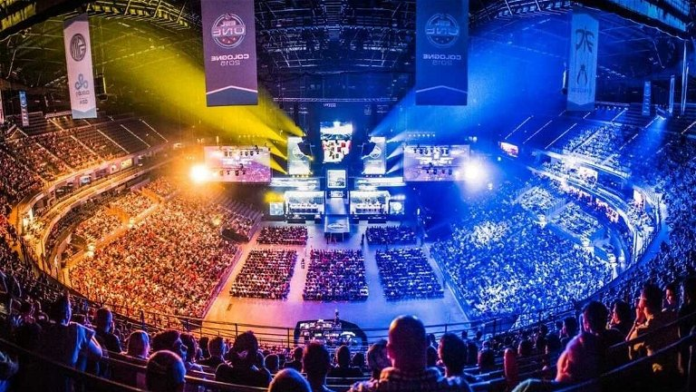

Se considera que el primer videojuego fue "Tennis for Two" (Tenis para Dos), creado por William Higinbotham en 1958. Utilizaba un osciloscopio para mostrar gráficos simples de tenis.

Década de 1960: Ralph Baer desarrolló el primer sistema de juegos doméstico, conocido como "Brown Box" (Caja Marrón), que más tarde se convirtió en la Magnavox Odyssey, lanzada en 1972.

Este período vio el nacimiento de los juegos arcade, con títulos icónicos como Pong, Space Invaders y Pac-Man. También fue cuando Atari lanzó su consola Atari 2600, popularizando los juegos domésticos.

Se produjo un auge en la industria de los videojuegos con la llegada de consolas como Nintendo Entertainment System (NES) y Sega Master System. Surgieron franquicias legendarias como Super Mario Bros., The Legend of Zelda y Final Fantasy.

Fue la era de la transición a los juegos en 3D. Nintendo lanzó el Super Nintendo (SNES) y luego el Nintendo 64, mientras que Sony irrumpió en el mercado con la PlayStation original. Se lanzaron títulos revolucionarios como Super Mario 64, Tomb Raider y Metal Gear Solid.

La tecnología continuó avanzando, con la llegada de la PlayStation 2, Xbox y GameCube. Los juegos en línea se volvieron cada vez más populares con títulos como World of Warcraft y Counter-Strike. También vimos la aparición de los juegos móviles con el lanzamiento del iPhone en 2007.

Se produjo una explosión en la popularidad de los juegos independientes, con títulos como Minecraft, Limbo y Braid. La PlayStation 4, Xbox One y Nintendo Switch se convirtieron en las consolas dominantes, y los juegos de realidad virtual comenzaron a ganar tracción.

La tecnología de los videojuegos sigue avanzando a un ritmo acelerado, con un enfoque creciente en la realidad virtual, la realidad aumentada y el juego en la nube. Los eSports se han convertido en un fenómeno global, con millones de personas sintonizando torneos en línea.
